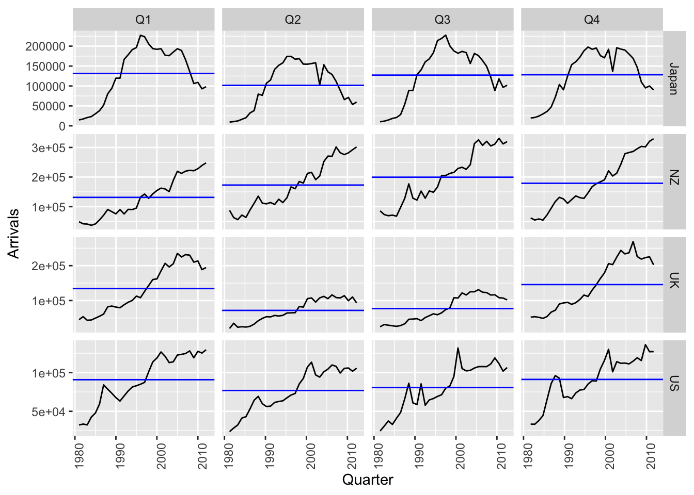

library(fpp3)1 Solution to Chapter 2 Exercises
Exercise 1
Explore the following four time series: Bricks from aus_production, Lynx from pelt, Close from gafa_stock, Demand from vic_elec.
a. What is the time interval of each series?
b. Use autoplot() to produce a time plot of each series. For the last plot, modify the axis labels and title.(a)
tsibble::interval(aus_production)<interval[1]>
[1] 1Qtsibble::interval(pelt)<interval[1]>
[1] 1Ygafa_stock %>% select(Close)# A tsibble: 5,032 x 3 [!]
# Key: Symbol [4]
Close Date Symbol
<dbl> <date> <chr>
1 79.0 2014-01-02 AAPL
2 77.3 2014-01-03 AAPL
3 77.7 2014-01-06 AAPL
4 77.1 2014-01-07 AAPL
5 77.6 2014-01-08 AAPL
6 76.6 2014-01-09 AAPL
7 76.1 2014-01-10 AAPL
8 76.5 2014-01-13 AAPL
9 78.1 2014-01-14 AAPL
10 79.6 2014-01-15 AAPL
# ℹ 5,022 more rowstsibble::interval(gafa_stock)<interval[1]>
[1] !gafa_stock data has irregular time interval.
tsibble::interval(vic_elec)<interval[1]>
[1] 30mvic_elec data has a time interval of 30 mins.
(b)
aus_production %>% autoplot(Bricks)pelt %>% autoplot(Lynx)gafa_stock %>% autoplot(Close) + labs(x = NULL)vic_elec %>%
autoplot(Demand) +
labs(title = "Time series of Demand from vic_elec", x = NULL)1.1 Exercise 2
Use filter() to find what days corresponded to the peak closing price for each of the four stocks in gafa_stock.
gafa_stock %>%
group_by(Symbol) %>%
filter(Close == max(Close)) %>%
select(Symbol, Date, Close) %>% ungroup()# A tsibble: 4 x 3 [!]
# Key: Symbol [4]
Symbol Date Close
<chr> <date> <dbl>
1 AAPL 2018-10-03 232.
2 AMZN 2018-09-04 2040.
3 FB 2018-07-25 218.
4 GOOG 2018-07-26 1268.1.2 Exercise 3
Download the file tute1.csv from the book website, open it in Excel (or some other spreadsheet application), and review its contents. You should find four columns of information. Columns B through D each contain a quarterly series, labelled Sales, AdBudget and GDP. Sales contains the quarterly sales for a small company over the period 1981-2005. AdBudget is the advertising budget and GDP is the gross domestic product. All series have been adjusted for inflation.
(a) Read the data and create time series
(b) Construct ts plot for each seriestute1 <- readr::read_csv(here::here("data/tute1.csv"))
head(tute1)# A tibble: 6 × 4
Quarter Sales AdBudget GDP
<date> <dbl> <dbl> <dbl>
1 1981-03-01 1020. 659. 252.
2 1981-06-01 889. 589 291.
3 1981-09-01 795 512. 291.
4 1981-12-01 1004. 614. 292.
5 1982-03-01 1058. 647. 279.
6 1982-06-01 944. 602 254 tute1 %>%
mutate(Quarter = yearquarter(Quarter)) %>%
as_tsibble(index = Quarter) -> ts_tute
ts_tute# A tsibble: 100 x 4 [1Q]
Quarter Sales AdBudget GDP
<qtr> <dbl> <dbl> <dbl>
1 1981 Q1 1020. 659. 252.
2 1981 Q2 889. 589 291.
3 1981 Q3 795 512. 291.
4 1981 Q4 1004. 614. 292.
5 1982 Q1 1058. 647. 279.
6 1982 Q2 944. 602 254
7 1982 Q3 778. 531. 296.
8 1982 Q4 932. 608. 272.
9 1983 Q1 996. 638. 260.
10 1983 Q2 908. 582. 280.
# ℹ 90 more rowsts_tute %>%
pivot_longer(-Quarter) %>% autoplot(value)
ts_tute %>%
pivot_longer(-Quarter) %>%
ggplot(aes(x = Quarter, y = value, color = name)) +
geom_line()
ts_tute %>%
pivot_longer(-Quarter) %>%
ggplot(aes(x = Quarter, y = value, color = name)) +
geom_line() +
facet_grid(name ~ ., scales = "free_y")1.3 Exercise 4
The USgas package contains data on the demand for natural gas in the US.
- Create a tsibble from us_total with year as the index and state as the key.
- Plot the annual natural gas consumption by state for the New England area (comprising the states of Maine, Vermont, New Hampshire, Massachusetts, Connecticut and Rhode Island).
data(us_total, package = "USgas")
head(us_total) year state y
1 1997 Alabama 324158
2 1998 Alabama 329134
3 1999 Alabama 337270
4 2000 Alabama 353614
5 2001 Alabama 332693
6 2002 Alabama 379343us_total %>%
as_tsibble(index = year, key = state) -> ts_us_total
ts_us_total# A tsibble: 1,266 x 3 [1Y]
# Key: state [53]
year state y
<int> <chr> <int>
1 1997 Alabama 324158
2 1998 Alabama 329134
3 1999 Alabama 337270
4 2000 Alabama 353614
5 2001 Alabama 332693
6 2002 Alabama 379343
7 2003 Alabama 350345
8 2004 Alabama 382367
9 2005 Alabama 353156
10 2006 Alabama 391093
# ℹ 1,256 more rowsts_us_total %>%
filter(state %in% c("Maine", "Vermont", "New Hampshire", "Massachusetts", "Connecticut",
"Rhode Island")) %>%
autoplot(y) +
scale_y_continuous(labels = scales::label_number(scale_cut = scales::cut_short_scale()))1.4 Exercise 5
- Download
tourism.xlsxfrom the book website and read it into R usingreadxl::read_excel(). - Create a
tsibblewhich is identical to the tourism tsibble from the tsibble package. - Find what combination of Region and Purpose had the maximum number of overnight trips on average.
- Create a new
tsibblewhich combines the Purposes and Regions, and just has total trips by State.
tourism_xl <- readxl::read_excel("data/tourism.xlsx")
head(tourism_xl)# A tibble: 6 × 5
Quarter Region State Purpose Trips
<chr> <chr> <chr> <chr> <dbl>
1 1998-01-01 Adelaide South Australia Business 135.
2 1998-04-01 Adelaide South Australia Business 110.
3 1998-07-01 Adelaide South Australia Business 166.
4 1998-10-01 Adelaide South Australia Business 127.
5 1999-01-01 Adelaide South Australia Business 137.
6 1999-04-01 Adelaide South Australia Business 200.tourism# A tsibble: 24,320 x 5 [1Q]
# Key: Region, State, Purpose [304]
Quarter Region State Purpose Trips
<qtr> <chr> <chr> <chr> <dbl>
1 1998 Q1 Adelaide South Australia Business 135.
2 1998 Q2 Adelaide South Australia Business 110.
3 1998 Q3 Adelaide South Australia Business 166.
4 1998 Q4 Adelaide South Australia Business 127.
5 1999 Q1 Adelaide South Australia Business 137.
6 1999 Q2 Adelaide South Australia Business 200.
7 1999 Q3 Adelaide South Australia Business 169.
8 1999 Q4 Adelaide South Australia Business 134.
9 2000 Q1 Adelaide South Australia Business 154.
10 2000 Q2 Adelaide South Australia Business 169.
# ℹ 24,310 more rowstourism_xl %>%
mutate(Quarter = yearquarter(Quarter)) %>%
as_tsibble(index = Quarter, key = c(Region, State, Purpose)) -> tourism_ts
tourism_ts# A tsibble: 24,320 x 5 [1Q]
# Key: Region, State, Purpose [304]
Quarter Region State Purpose Trips
<qtr> <chr> <chr> <chr> <dbl>
1 1998 Q1 Adelaide South Australia Business 135.
2 1998 Q2 Adelaide South Australia Business 110.
3 1998 Q3 Adelaide South Australia Business 166.
4 1998 Q4 Adelaide South Australia Business 127.
5 1999 Q1 Adelaide South Australia Business 137.
6 1999 Q2 Adelaide South Australia Business 200.
7 1999 Q3 Adelaide South Australia Business 169.
8 1999 Q4 Adelaide South Australia Business 134.
9 2000 Q1 Adelaide South Australia Business 154.
10 2000 Q2 Adelaide South Australia Business 169.
# ℹ 24,310 more rowstourism_ts %>%
group_by(Region, Purpose) %>%
summarise(trips = sum(Trips), .groups = "drop") %>%
slice_max(trips, n = 1)# A tsibble: 1 x 4 [1Q]
# Key: Region, Purpose [1]
Region Purpose Quarter trips
<chr> <chr> <qtr> <dbl>
1 Melbourne Visiting 2017 Q4 985.tourism_ts %>%
group_by(State) %>%
summarise(trips = sum(Trips), .groups = "drop") -> trips_by_state
trips_by_state# A tsibble: 640 x 3 [1Q]
# Key: State [8]
State Quarter trips
<chr> <qtr> <dbl>
1 ACT 1998 Q1 551.
2 ACT 1998 Q2 416.
3 ACT 1998 Q3 436.
4 ACT 1998 Q4 450.
5 ACT 1999 Q1 379.
6 ACT 1999 Q2 558.
7 ACT 1999 Q3 449.
8 ACT 1999 Q4 595.
9 ACT 2000 Q1 600.
10 ACT 2000 Q2 557.
# ℹ 630 more rows1.5 Exercise 6
The aus_arrivals data set comprises quarterly international arrivals to Australia from Japan, New Zealand, UK and the US.
- Use
autoplot(),gg_season()andgg_subseries()to compare the differences between the arrivals from these four countries. - Can you identify any unusual observations?
aus_arrivals# A tsibble: 508 x 3 [1Q]
# Key: Origin [4]
Quarter Origin Arrivals
<qtr> <chr> <int>
1 1981 Q1 Japan 14763
2 1981 Q2 Japan 9321
3 1981 Q3 Japan 10166
4 1981 Q4 Japan 19509
5 1982 Q1 Japan 17117
6 1982 Q2 Japan 10617
7 1982 Q3 Japan 11737
8 1982 Q4 Japan 20961
9 1983 Q1 Japan 20671
10 1983 Q2 Japan 12235
# ℹ 498 more rowsaus_arrivals %>%
autoplot(Arrivals) +
scale_y_continuous(labels = scales::label_number(scale_cut = scales::cut_short_scale()))aus_arrivals %>%
gg_season(Arrivals) +
scale_y_continuous(labels = scales::label_number(scale_cut = scales::cut_short_scale()))aus_arrivals %>% gg_subseries(Arrivals)